Section 2: OpenVINO Model Serving
In this section we will work in an excercise to deploy a model to an OpenVINO Serving Runtime.
Prepare MinIO
MinIO is a high-performance, S3 compatible object store. It is built for large scale AI/ML, data lake and database workloads. It is software-defined and runs on any cloud or on-premises infrastructure.
We will need an S3 solution to share the model from training to deploy, in this exercise we will prepare MinIO to be such S3 solution.
-
In OpenShift, create a new namespace with the name object-datastore
oc new-project object-datastore -
Run the following yaml to install MinIO
curl https://raw.githubusercontent.com/RedHatQuickCourses/rhods-qc-apps/main/4.rhods-deploy/chapter2/minio.yml oc apply -f ./minio.yml -n object-datastore -
Get the route to the MinIO dashboard
oc get routes -n object-datastore | grep minio-ui | awk '{print $2}'Use this route to navigate to the S3 dashboard using a browser. With the browser, you will be able to create buckets, upload files, and navigate the S3 contents.
-
Get the route to the MinIO API
oc get routes -n object-datastore | grep minio-api | awk '{print $2}'Use this route as the S3 API endpoint. Basically, this is the URL that we will use when creating a data connection to the S3 in RHODS.
Training The Model
We will use the iris dataset model for this excercise.
-
Using a JupyterLab workbench at RHODS, import the repository: https://github.com/RedHatQuickCourses/rhods-qc-apps.git
It is recommended to use a workbench that was created with the Standard Data Science Notebook image.
-
Make sure that the workbench environment serves the required python packages for the notebook to run, for this to happen, open a terminal and run the following command to verify that the packages are already installed:
pip install -r /opt/app-root/src/rhods-qc-apps/4.rhods-deploy/chapter2/requirements.txt
|
You might also want to execute the preceding command in the notebook kernel by using the |
-
Open and run the notebook iris_to_onnx from rhods-qc-apps/4.rhods-deploy/chapter2 directory
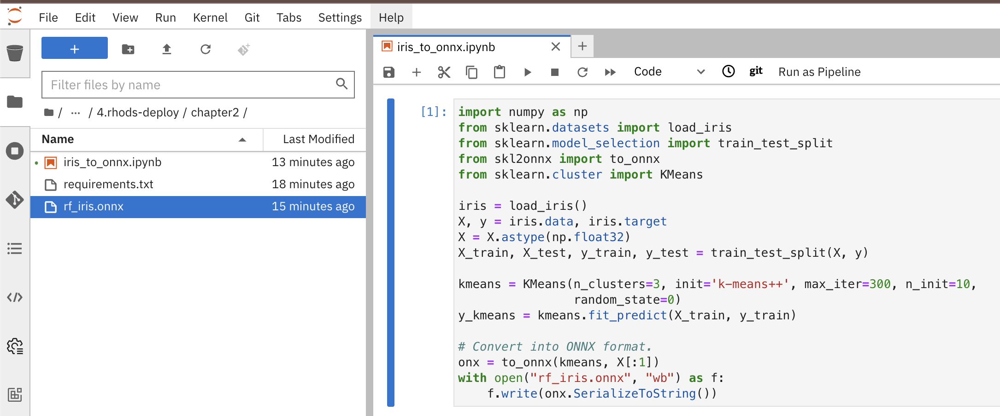 -
Observe that a file has been created:
rf_iris.onnx, download this file to your computer, so that we can upload it to S3.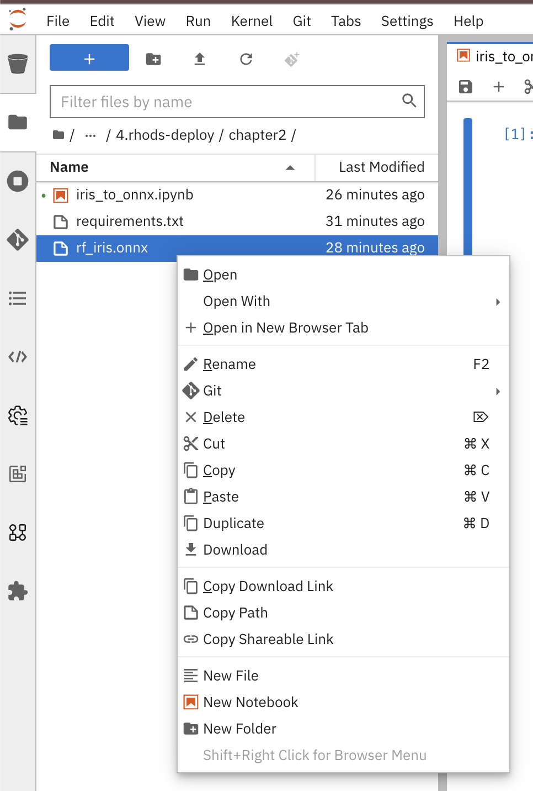 -
Upload the file
rf_iris.onnxto a bucket named models, with a path iris in your S3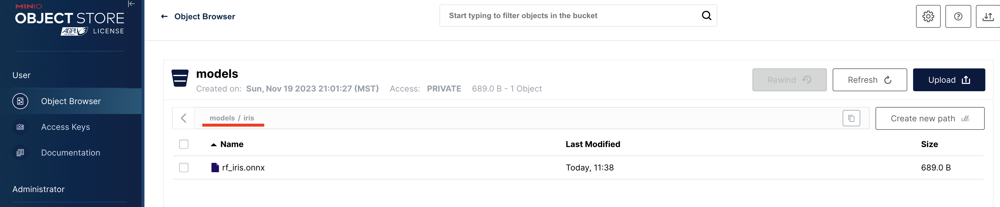Make sure to create a new path in your bucket, and upload to such path, not to root. Later, when requesting to deploy a model to the Model Server, you will be required to provide a path inside your bucket.
Create A Data Connection
-
In RHODS dashboard, create a project named iris-project.
-
In the Data Connections section, create a Data Connection to your S3
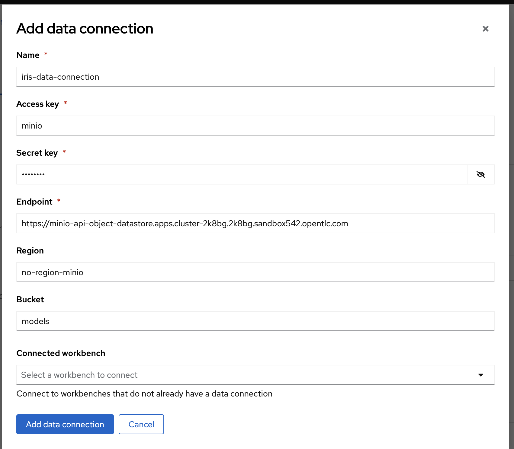-
The credentials (Access Key/Secret Key) are
minio/minio123. -
Make sure to use the API route, not the UI route (
oc get routes -n object-datastore | grep minio-api | awk '{print $2}'). -
The region is not important when using MinIO, this is a property that has effects when using AWS S3.
-
Mind typos for the bucket name.
-
You don’t have to select a workbench to attach this data connection to.
-
Create a Model Server
-
In the Models and model servers section, add a server.
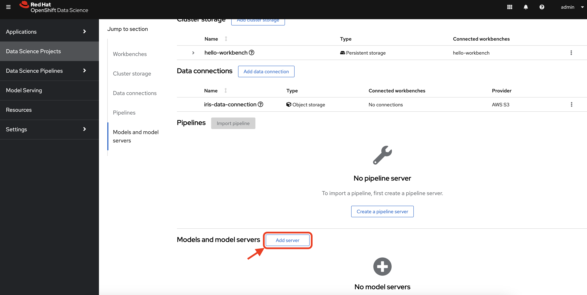 -
Fill the form with the example values:
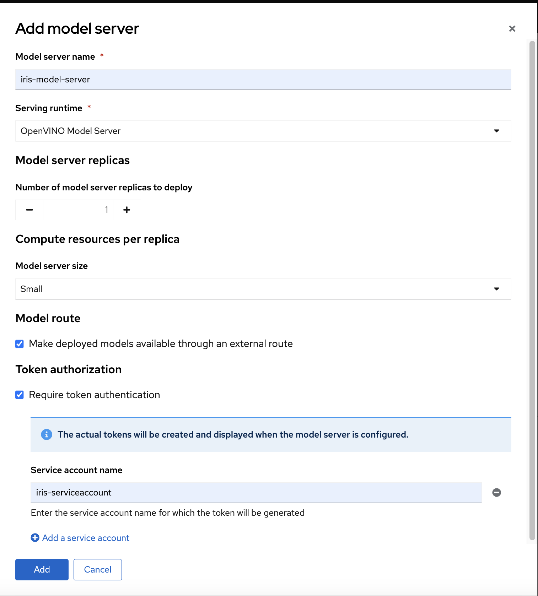The model server you are creating works as a template for deploying models. As you can see, we have not specified the model that we will deploy, or the data connection from where that model will be retrieved, in this form we are specifying the resources, constraints, and engine that will define the engine where the model will be deployed later. It is important to pay special attention to the following characteristics:
-
Serving Runtime: By default we have OpenVINO and OpenVINO with GPU. The important aspects when defining these runtimes are: The framework that is capable of reading models in a given format, and weather such platform supports using GPUs. The use of GPUs allow for complex and lengthy computations to be delivered faster, as there are huge models that require a good amount of power to calculate, based on the given parameters a prediction.
-
Number of replicas to deploy: Planning for expected performance and number of expected requests is essential for this part of the form. Here we select if we will load balance a given request between multiple container replicas.
-
Model Server Size: In this part of the form we define the resources assigned to each model server container. You can create and select a pre-defined size from the dropdown, or you can select custom, in which case, new fields will be displayed to request the processing and memory power to be assigned to your containers.
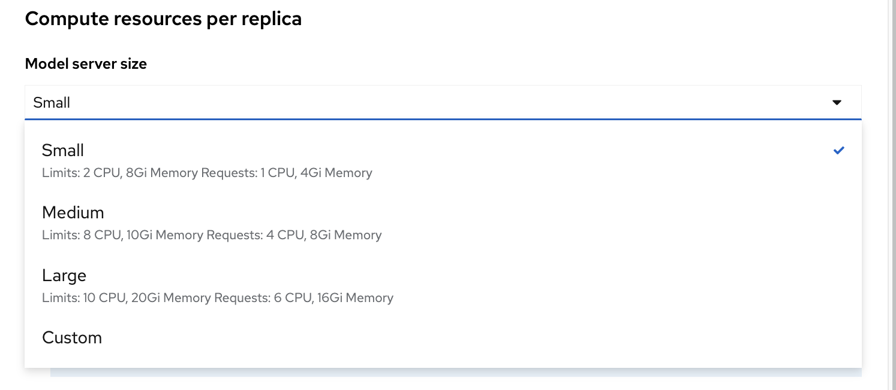 -
Model Route: There are models that can be consumed only from other containers inside the same OpenShift cluster, here we have the hability to don’t make this server available to entities outside our cluster, or to instruct the model server configuration to assign an external route. When we don’t expose the model externally through a route, click on the Internal Service link in the Inference endpoint section:
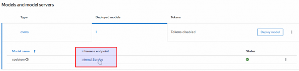A popup will display the address for the gRPC and the REST URLs:
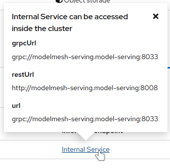 -
Token authorization: In this part of the form we have a helper checkmark to add authorization to a service account that will be created with access to our model server. Only API requests that present a token that has access to the given service account will be able to run the inference service.
-
-
After clicking the Add button at the bottom of the form, you will be able to see a new Model Server configuration in your project, you can click the Tokens column, which will make visible the tokens that you can share with the applications that will consume the inference API.
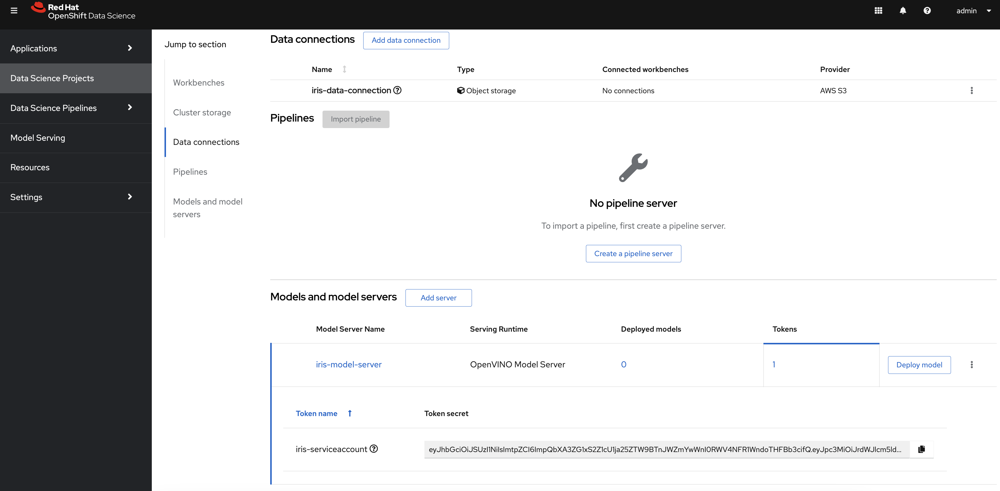
Deploy The Model
-
At the right side of the Model Server, we can find the Deploy Model button, let’s click the Deploy Model button, to start filling the Deploy Model form:
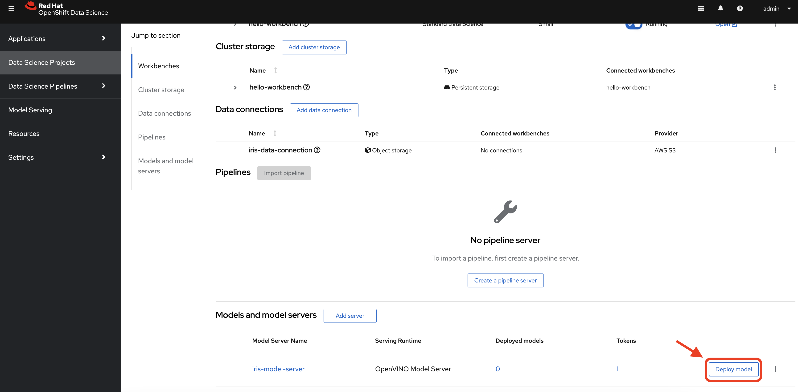 -
Fill the Deploy Model from as in the example:
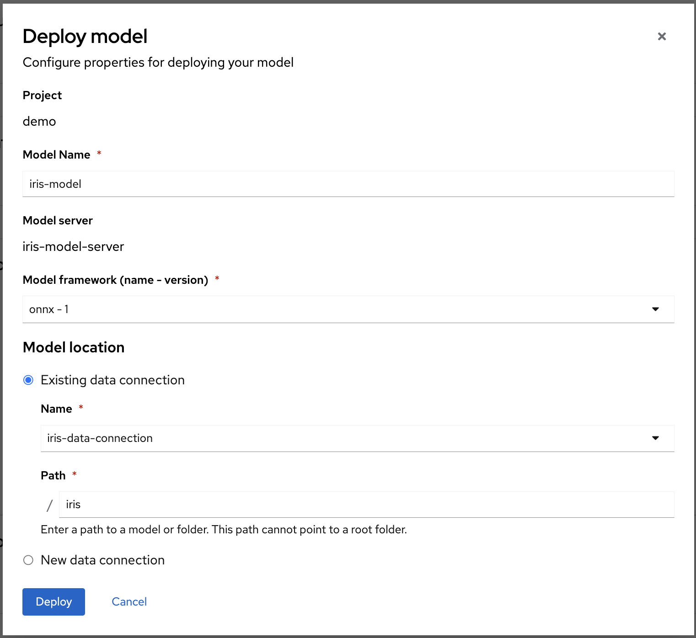 -
After clicking the Add button at the bottom of the form, you will be able to see a new entry at the Deployed models column for your Model Server, clicking in the column will eventually show a check mark under the Status column:
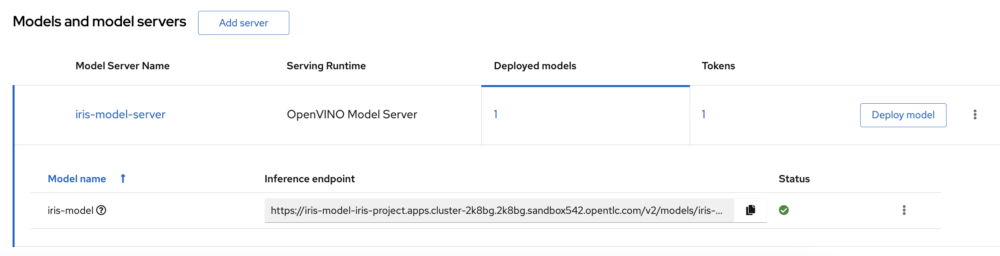 -
Observe and monitor the assets created in your OpenShift iris-project namespace.
oc get routes -n iris-project oc get secrets -n iris-project | grep iris-model oc get events -n iris-project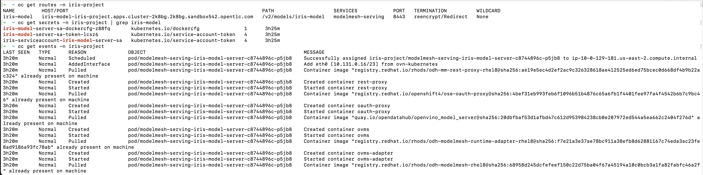Deploying a Model Server triggers a ReplicaSet with ModelMesh, which attach your model to the inference runtime, and exposes it through a route. Also, notice the creation of a secret with your token.
Test The Model With CURL
Now that the model is ready to use, we can make an inference using the REST API
-
Assign the route to an environment variable in your local machine, so that we can use it in our curl commands
export IRIS_ROUTE=https://$(oc get routes -n iris-project | grep iris-model | awk '{print $2}') -
Assign an authentication token to an environment variable in your local machine
export TOKEN=$(oc whoami -t) -
Request an inference with the REST API
curl -H "Authorization: Bearer $TOKEN" $IRIS_ROUTE/v2/models/iris-model/infer -X POST --data '{"inputs" : [{"name" : "X","shape" : [ 1, 4 ],"datatype" : "FP32","data" : [ 3, 4, 3, 2 ]}],"outputs" : [{"name" : "output0"}]}'
The result of using the inference service looks like the following output:
{"model_name":"iris-model__isvc-590b5324f9","model_version":"1","outputs":[{"name":"label","datatype":"INT64","shape":[1],"data":[1]},{"name":"scores","datatype":"FP32","shape":[1,3],"data":[4.851966,3.1275764,3.4580243]}]}